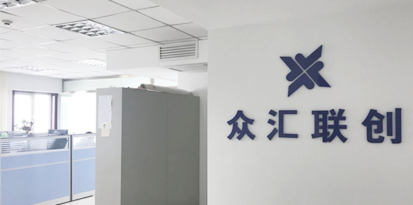

辽宁众汇联创科技有限公司
网址：http://www.zh-lc.com
联系电话：024-31683896
地址：辽宁省沈阳市浑南新区世纪路5号同方世纪大厦A座
中级Java开发工程师
招聘人数：5人工作地点：沈阳
岗位职责：
- 1、参与公司产品的管理平台、门户以及移动端网站的前端开发；
- 2、与产品经理、设计师、后端工程师紧密配合，产出高质量的前端页面；
- 3、能充分理解项目需求和设计需求，具有一定研究精神，能解决各种未知问题。
任职要求：
- 1、2-5年以上工作经验；
- 2、熟练掌握JAVA技术，熟悉面向对象编程设计，熟悉数据结构，具备扎实的编程基础；
- 3、熟悉SpringMVC,Spring,Hibernate,MyBatis,Struts等开发框架；
- 4、掌握数据库原理，有基本的数据库调优的能力；
- 5、了解HTML,JAVASCRIPT,CSS,H5相关技术内容；
- 6、熟练使用svn/git/cvs等版本管理工具的一种或几种；
- 7、了解网络通讯和网络安全，对TCP/IP,Http,Android接口有一定理解；
- 8、拥有良好的代码习惯，结构清晰，命名规范，逻辑性强；
- 9、具有较强的自学能力，脚踏实地，能够承受一定的工作压力。
高级Java开发工程师
招聘人数：2人工作地点：沈阳
岗位职责：
- 1、参与公司项目的设计开发及主体框架的搭建。
- 2、与产品经理紧密配合，及时有效的完成相关业务沟通并能深刻理解客户需求。
- 3、具有很强的研究精神、探索精神，有能力解决各种技术上的未知问题。
任职要求：
- 1、精通JAVA技术，精通面向对象编程设计，精通数据结构，具备扎实的编程基础。
- 2、掌握Spring,Hibernate,MyBatis,Struts等开发框架。
- 3、掌握数据库原理，有比较强的数据库调优的能力。
- 4、熟悉HTML,JAVASCRIPT,CSS,HTML5开发。
- 5、熟练掌握svn/git/cvs等版本管理工具的一种或几种。
- 6、熟悉网络通讯和网络安全，对TCP/IP,Http,Android接口对接有一定经验。
- 7、拥有良好的代码习惯，结构清晰，命名规范，逻辑性强。
- 8、具有较强的自学能力，脚踏实地，能够承受一定的工作压力。
中级前端开发工程师
招聘人数：3人工作地点：沈阳
岗位职责：
- 1、参与公司产品的管理平台、门户以及移动端网站的前端开发；
- 2、与产品经理、设计师、后端工程师紧密配合，产出高质量的前端项目；
- 3、能充分理解项目需求和设计需求，具有一定研究精神，能解决各种未知问题。
任职要求：
- 1、2年以上工作经验，1年以上前端开发工作经验；
- 2、熟悉HTML、CSS及JavaScript开发，了解移动端页面开发和CSS3、HTML5等新特性；
- 3、能够协助后端工程师进行动态页面（JSP）的集成，及接口联调；
- 4、熟悉模块化设计及单页面应用，至少熟悉AngularJS、ReactJS、VUE.js中的一种，能够进行前后端分离模式的开发；
- 5、了解HTTP协议及前端部署、构建相关知识；
- 6、具有学习和研究精神，善于解决各类问题并积极学习新的知识；
- 7、能够指导其它初级员工进行学习及工作；
- 8、有各类富文本编辑器开发经验者优先；有微信公众平台、微信小程序开发经验者优先。
高级前端开发工程师
招聘人数：2人工作地点：沈阳
岗位职责：
- 1、参与公司产品的管理平台、门户以及移动端网站的前端开发；
- 2、与产品经理、设计师、后端工程师紧密配合，产出高质量的前端项目；
- 3、能充分理解项目需求和设计需求，具有一定研究精神，能解决各种未知问题；
- 4、负责公司各类桌面及移动端项目前端架构设计、核心功能开发及疑难问题处理等；
- 5、参与部分项目管理工作。
任职要求：
- 1、5年以上软件开发工作经验、3年以上前端开发经验；
- 2、计算机及相关专业毕业，软件开发基础知识扎实；
- 3、精通HTML、CSS及JavaScript开发，了解移动端页面开发和CSS3、HTML5等新特性；
- 4、精通PC及移动端页面的开发，精通Bootstrap及其它前端样式框架，熟练掌握响应式布局、REM布局等前端布局方案；
- 5、精通原生JS（ES5、ES6）、jQuery/Zepto，熟悉各类前端JS工具库，熟悉Gulp、WebPack等前端构建工具；
- 6、精通模块化及单页面应用设计，至少熟悉Angular、React、VUE中的一种；
- 7、熟悉PC、移动端、微信等各种场景下的前端调试方案及调试工具；
- 8、熟悉网络传输、HTTP协议、网络安全、前端部署、性能优化等知识；
- 9、有学习和钻研精神，善于解决各类问题并积极学习新的知识，有基础的英文阅读能力；
- 10、能够进行各类型应用场景下的前端架构设计，指导其它员工进行学习及工作；
- 11、有各类客户端或服务端开发经验者优先；
- 12、有各类富文本编辑器开发经验者优先；有微信公众平台、微信小程序开发经验者优先；
- 13、有项目管理经验者优先。